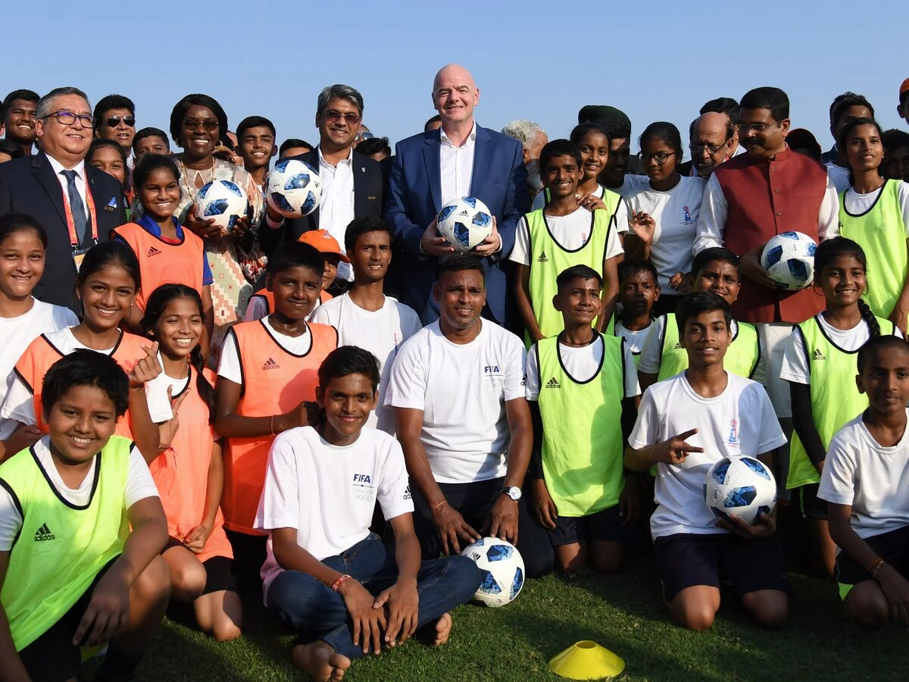
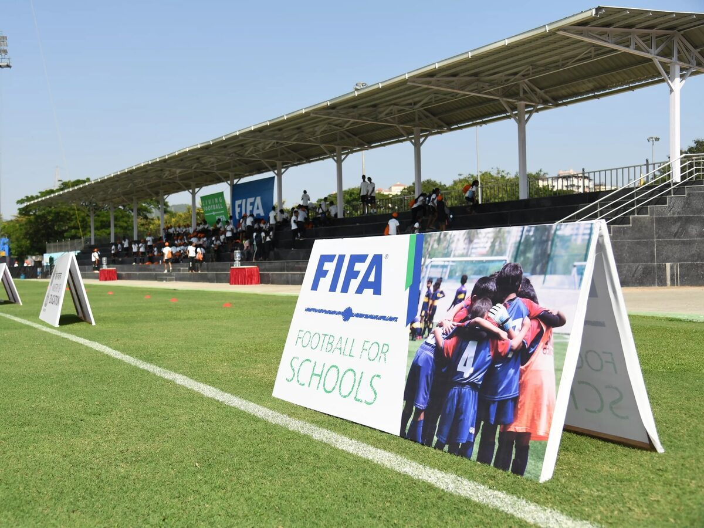
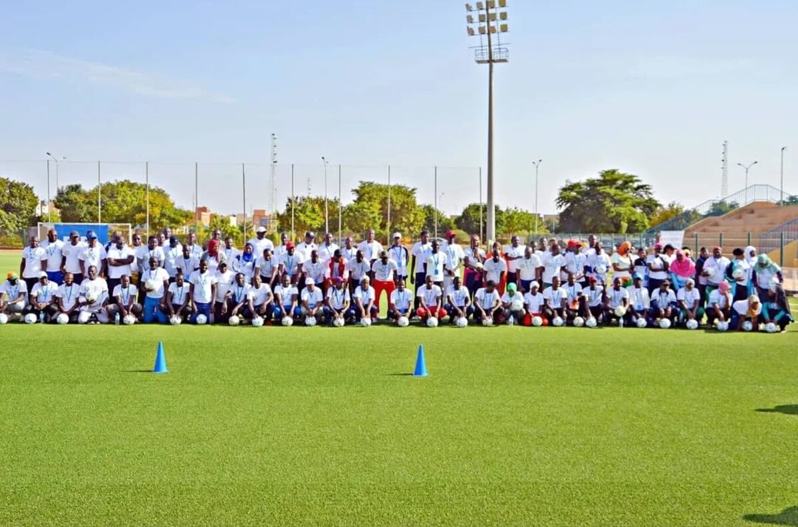
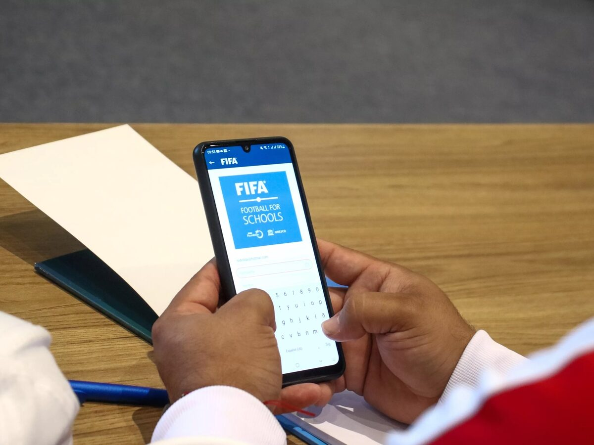
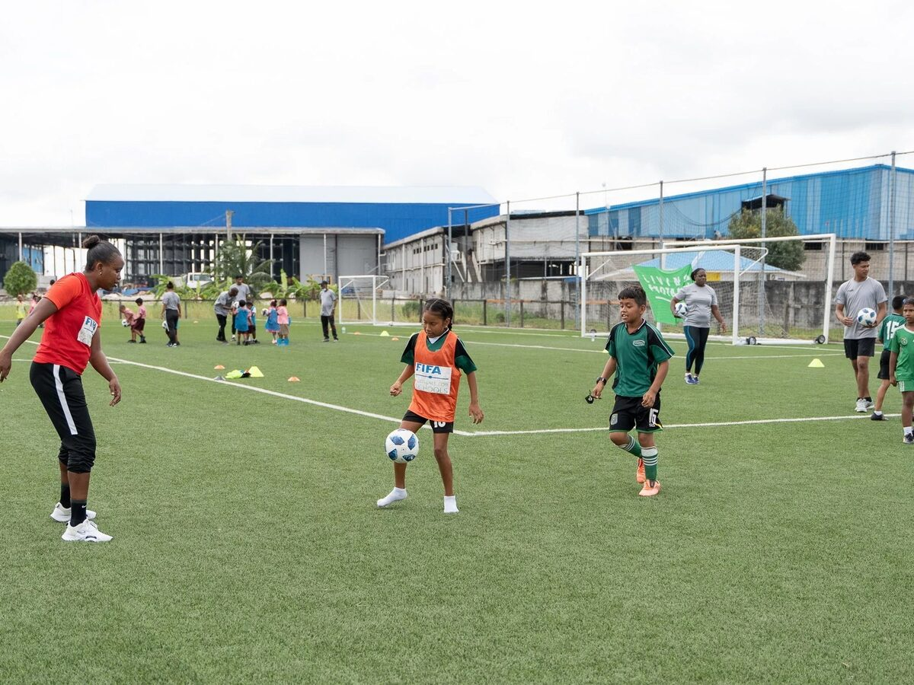
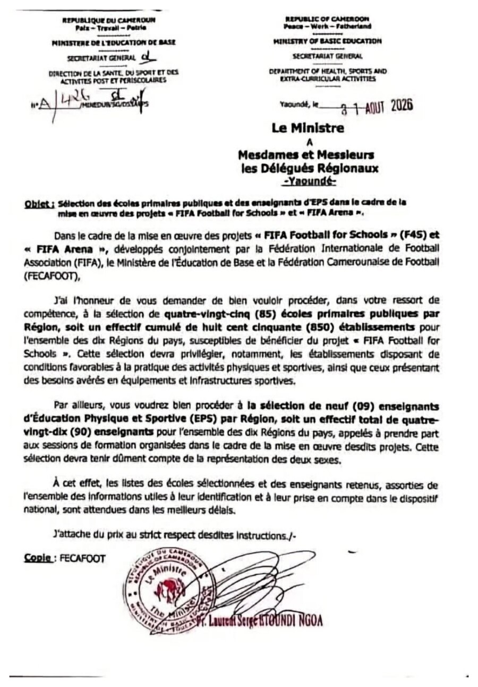

Pourquoi Samuel Eto’o a-t-il choisi de soutenir Gianni Infantino ?
Football for Schools, FIFA Arena et les intérêts stratégiques du football camerounais.
Composition LCIR à partir de photographies diffusées par la FIFA — rencontre Gianni Infantino / Samuel Eto’o et séances Football for Schools.
Le Cameroun pourrait progressivement passer d’un système où l’on découvre presque accidentellement les talents à un système où l’on organise leur détection.
Pourquoi cet article ?
Depuis plusieurs années, chaque prise de position de Samuel Eto’o dans les rapports de force du football mondial est presque immédiatement interprétée au Cameroun à travers les personnes : proximité avec Gianni Infantino, opposition à tel dirigeant, stratégie de pouvoir ou recherche de protection institutionnelle. Cette lecture n’est pas toujours sans fondement, car le football international est aussi un espace politique. Mais elle devient insuffisante lorsqu’elle empêche de regarder ce que les alliances produisent concrètement pour le pays.
La question utile n’est donc pas seulement de savoir pourquoi Samuel Eto’o soutient l’exécutif actuel de la FIFA. Elle consiste d’abord à mesurer ce que le football camerounais reçoit, construit ou peut structurer dans le cadre de cette relation. Une alliance institutionnelle ne se juge pas uniquement aux déclarations et aux images entre dirigeants ; elle se juge aussi aux infrastructures obtenues, aux programmes implantés, aux compétences transférées et aux transformations durables qu’elle rend possibles.
C’est dans ce contexte qu’un document administratif apparemment ordinaire change la nature du débat. Le 31 août 2026, le ministère de l’Éducation de base demande à ses dix délégations régionales de sélectionner 85 écoles primaires publiques par région et neuf enseignants d’éducation physique et sportive par région pour la mise en œuvre conjointe de FIFA Football for Schools et FIFA Arena. Au total, 850 écoles et 90 enseignants sont concernés par cette première architecture nationale.
Le problème de fond : le Cameroun produit des talents, mais pas encore un système
Le Cameroun a donné au football mondial des générations de joueurs remarquables. Pourtant, cette réussite historique peut masquer une faiblesse structurelle : une grande partie des talents demeure découverte par hasard, par proximité géographique, par relations personnelles ou à l’occasion d’un tournoi ponctuel. Le pays dispose d’un immense vivier humain, mais il ne dispose pas encore d’un mécanisme homogène capable d’observer régulièrement les enfants, de suivre leur progression et de les orienter vers des structures contrôlées.
Cette faiblesse ne concerne pas uniquement la sélection des futurs internationaux. Elle affecte toute l’économie du football : les clubs recrutent avec peu de données, les académies travaillent de manière inégale, les compétitions de jeunes manquent de continuité, les métiers d’encadrement restent fragiles et les familles sont parfois exposées à des intermédiaires informels. Autrement dit, lorsque la détection n’est pas organisée, la formation, les contrats, les indemnités et la valeur économique des joueurs restent eux aussi insuffisamment structurés.
Football for Schools et FIFA Arena doivent donc être analysés à partir de ce besoin national. Leur intérêt n’est pas simplement de faire jouer davantage d’enfants ou de distribuer des équipements. Leur potentiel est de créer la base territoriale d’un système : des lieux de pratique, des adultes formés, des rendez-vous réguliers, des informations comparables et des passerelles vers les clubs.
Le changement de perspective
| Lecture superficielle du projet | Question structurelle posée par cet article |
|---|---|
| Une opération de communication FIFA–FECAFOOT | Quels actifs durables restent au Cameroun ? |
| Des ballons, des tenues et des terrains | Comment créer une pratique régulière et mesurable ? |
| Un programme scolaire supplémentaire | Comment relier l’école aux ligues, clubs et académies ? |
| Une preuve de proximité Eto’o–Infantino | Quels intérêts institutionnels convergent réellement ? |
| Une promesse de détection | Quel système protège et accompagne l’enfant repéré ? |
Cet article examine les conditions nécessaires pour que cette promesse devienne une transformation sportive, économique et institutionnelle. Il distingue ce qui est déjà établi par les documents, ce qui relève du potentiel et ce qui dépend encore des décisions camerounaises.
Résumé exécutif
La lettre du ministère de l’Éducation de base datée du 31 août 2026 donne au projet une dimension nationale : 85 écoles primaires publiques doivent être sélectionnées dans chacune des dix régions, soit 850 établissements, et neuf enseignants d’EPS par région doivent rejoindre les formations, soit 90 enseignants. Le texte vise conjointement FIFA Football for Schools (F4S) et FIFA Arena, avec une priorité accordée aux écoles disposant de conditions favorables à l’activité physique ou présentant des besoins avérés en équipements et infrastructures.
Ce dispositif ne constitue pas encore, à lui seul, un système national de formation. Il crée toutefois sa couche la plus difficile à obtenir : un maillage initial, régulier, public et territorial de la pratique. S’il est relié aux compétitions scolaires, à une base de données fiable, aux ligues, aux clubs et aux académies certifiées, il peut réduire le rôle du hasard dans la découverte des joueurs.
Figure 1 — Données directement établies par la correspondance administrative du MINEDUB du 31 août 2026.
| Indicateur | Valeur établie | Lecture stratégique |
|---|---|---|
| Régions | 10 | Couverture nationale |
| Écoles publiques | 850 | 85 par région |
| Enseignants EPS | 90 | 9 par région |
| Ratio de déploiement | ≈ 9,4 écoles par enseignant formé | Nécessite relais et formation en cascade |
| Lancement national | 25 mars 2026, Yaoundé | Projet déjà entré en phase opérationnelle |
Les cinq conclusions
- Le projet transforme l’école primaire en porte d’entrée d’un continuum sportif national.
- L’infrastructure FIFA Arena peut convertir une pratique informelle en pratique régulière, sûre et observable.
- La valeur économique vient moins de la distribution de matériel que de la chaîne durable qu’elle peut amorcer : éducateurs, tournois, données, licences, académies, contrats, médias et équipement.
- Le soutien de Samuel Eto’o à l’exécutif Infantino peut être expliqué par une convergence d’intérêts institutionnels ; aucune preuve publique ne permet cependant d’en faire la cause unique ou explicitement déclarée.
- Le principal risque est l’effet vitrine : sans maintenance, calendrier de compétition, protocole de détection, protection des mineurs et indicateurs publics, le réseau resterait une juxtaposition d’écoles équipées.
1. Ce que dit exactement la lettre du MINEDUB
La portée du document tient d’abord à sa granularité. L’État ne se contente pas d’adhérer à une initiative internationale : il organise la sélection régionale des établissements et des personnels. La représentation des deux sexes est expressément demandée pour les enseignants. Cette architecture associe trois légitimités complémentaires : la FIFA apporte le programme et les instruments ; la FECAFOOT assure l’ancrage footballistique ; le MINEDUB ouvre le réseau scolaire public.
Le nombre de bénéficiaires finaux n’est pas indiqué dans la lettre. Il serait donc incorrect d’assimiler les 5,29 millions d’élèves du primaire recensés pour 2024 à des bénéficiaires du programme. Ce chiffre donne seulement l’échelle du vivier éducatif dans lequel s’inscrit l’initiative. De même, les 850 écoles ne signifient pas nécessairement 850 mini-terrains FIFA Arena : la lettre sélectionne des écoles susceptibles de bénéficier des projets, sans détailler la répartition des installations.
2. De la pratique spontanée à un système de détection
Le Cameroun ne souffre pas d’une absence de passion ou d’aptitudes. Il souffre d’une discontinuité institutionnelle : beaucoup d’enfants jouent, une fraction seulement est observée par un éducateur formé, une fraction plus petite encore rejoint une compétition documentée, puis un parcours de formation protégé. La détection dépend alors du quartier, du réseau familial, d’un tournoi ponctuel ou du regard fortuit d’un intermédiaire.
| Système dominé par le hasard | Système de détection organisée |
|---|---|
| Pratique irrégulière et peu documentée | Créneaux réguliers à l’école |
| Visibilité concentrée dans quelques villes | Points d’entrée dans les dix régions |
| Observation informelle | Grille commune et enseignants formés |
| Sélection par réputation ou relations | Traçabilité des observations et évaluations |
| Passage incertain vers les clubs | Protocoles d’orientation vers structures certifiées |
| Talents féminins moins visibles | Indicateurs et compétitions ventilés par sexe |
L’enjeu n’est pas de sélectionner massivement des enfants à huit ou dix ans. Il est d’élargir l’observation, d’éviter les exclusions précoces et d’organiser plusieurs fenêtres d’évaluation. La FIFA présente elle-même le développement du talent comme une chaîne : identifier, entraîner, offrir des possibilités de jouer, puis accompagner la transition. Le projet scolaire peut alimenter la première étape, mais il ne remplace pas les suivantes.
3. FIFA Arena : l’infrastructure comme actif public
Football for Schools apporte une méthode pédagogique mêlant football et compétences de vie. FIFA Arena ajoute l’actif physique : des mini-terrains sûrs, accessibles et durables, prioritairement dans les zones où les infrastructures de qualité manquent. L’objectif mondial annoncé est d’au moins 1 000 mini-terrains d’ici 2031.
Pour le Cameroun, la valeur d’un mini-terrain scolaire dépasse le football de haut niveau. Utilisé par plusieurs cohortes, il produit des heures d’activité physique, réduit la dépendance aux terrains dangereux ou éloignés, facilite les séances mixtes et peut servir de pôle communautaire en dehors des heures de classe. C’est donc un investissement à rendement sportif, éducatif, sanitaire et territorial.
Le modèle de responsabilité à formaliser
| Acteur | Responsabilité structurante | Indicateur de contrôle |
|---|---|---|
| FIFA | Composants spécialisés, méthode, appui technique | Livraison et conformité |
| MINEDUB / collectivités | Foncier, fondations, accès, sécurité | Disponibilité et usage scolaire |
| FECAFOOT | Contenu football, compétitions, passerelles | Séances, tournois, orientations |
| École | Planning, gardiennage, suivi des élèves | Heures d’utilisation |
| Communauté | Surveillance et usage encadré | Incidents, entretien, inclusivité |
L’expérience péruvienne documentée par la FIFA illustre ce partage : la FIFA fournit notamment le gazon synthétique, les clôtures spécialisées et l’assistance technique ; la collectivité construit les fondations et améliore les abords ; la fédération et la municipalité supervisent ensuite l’équipement. Le Cameroun gagnerait à publier une matrice comparable pour chaque installation.
4. Ce que les expériences internationales enseignent au Cameroun
Le programme n’est plus une simple expérimentation isolée. En janvier 2024, la FIFA déclarait 31,46 millions d’enfants bénéficiaires, 1,5 million de ballons distribués et 3 000 éducateurs formés, dont 31 % de femmes. En janvier 2026, son empreinte atteignait 151 pays, dont 46 en Afrique. Ces données démontrent une capacité mondiale de diffusion. Elles ne constituent toutefois pas une évaluation indépendante et ne démontrent pas, à elles seules, un effet causal sur la production de joueurs professionnels.
Figure 3 — Portée mondiale publiée par la FIFA en janvier 2024 (151 pays : janvier 2026) ; indicateurs de diffusion, non étude d’impact causal.
Comment lire correctement les « réussites » étrangères
La réussite ne signifie pas la même chose à chaque étape. Un lancement réussi prouve qu’une alliance institutionnelle peut être constituée ; une extension à plusieurs centaines d’écoles prouve qu’un dispositif peut changer d’échelle ; un second cycle de formation prouve qu’il peut durer ; une compétition scolaire prouve qu’il peut dépasser la distribution de matériel ; enfin, le suivi pluriannuel des enfants serait nécessaire pour démontrer un effet sur la formation et la professionnalisation. Les exemples ci-dessous sont donc classés selon ce qu’ils établissent réellement.
Inde : la preuve du passage à l’échelle
L’Inde offre le cas le plus spectaculaire de mobilisation du réseau scolaire. Le ministère indien de l’Éducation annonçait plus de 1,1 million de ballons destinés à plus de 150 000 écoles. En février 2024, 6 848 ballons avaient déjà été distribués à 1 260 écoles dans 17 districts de l’Odisha. En parallèle, environ 300 enseignants ou stagiaires d’éducation physique avaient suivi des formations de maîtres-formateurs dans trois villes.
Impact observable. Le programme a dépassé l’événement ponctuel pour entrer dans la logistique d’un immense système éducatif : achats massifs, distribution territoriale et constitution d’un premier noyau de formateurs. La donnée disponible mesure surtout une capacité de déploiement, pas encore l’assiduité des séances ni les trajectoires sportives des élèves.


Mexique : quand le programme débouche sur une compétition nationale
Dans les États de Guerrero, Sonora et Michoacán, plus de 500 écoles avaient déjà reçu des ballons et bénéficié de la formation des enseignants. En juin 2025, la Fédération mexicaine et le Secrétariat à l’Éducation publique ont relié cet effort à la phase finale du premier tournoi scolaire national : plus de 640 filles et garçons de moins de 12 ans, issus des 32 États, ont participé pendant quatre jours, avec 32 écoles dans chacun des tableaux féminin et masculin.
Impact observable. Le matériel et la formation ont produit une scène compétitive nationale, une visibilité pour les territoires et un objectif concret pour les établissements. C’est une transformation structurelle importante : l’école cesse d’être seulement un lieu d’initiation et devient le premier étage d’un calendrier de compétition.
Porto Rico : la preuve de la continuité
Premier territoire pilote en 2019, Porto Rico avait commencé avec 40 enseignants d’EPS formés. En 2023, il est devenu le premier membre de la FIFA à accueillir un deuxième séminaire Football for Schools : près de 200 éducateurs y ont participé, soit environ cinq fois l’effectif initial, et la clôture a réuni 120 enfants. En avril 2026, la fédération portoricaine indiquait que le programme fonctionnait dans près de 800 écoles.
Impact observable. Ce cas est le plus utile pour juger la durabilité : le dispositif a survécu à son lancement, a renouvelé et élargi la formation des adultes, puis s’est diffusé à une part substantielle du réseau scolaire. Les sources publiques associent aussi le programme à une progression de la pratique et à une utilisation plus inclusive, sans fournir encore d’évaluation causale indépendante.
Chili et Hong Kong : capacités locales, filles et inclusion
Au Chili, plus de 5 000 écoliers ont été directement touchés et 120 enseignants d’EPS formés dans cinq régions : l’impact principal est la distribution d’une compétence pédagogique hors d’un seul centre national. À Hong Kong, le lancement de décembre 2023 a associé 50 enseignants, 24 écoles et 500 élèves. Il a introduit deux innovations : une compétition interscolaire et des dispositions explicites pour accueillir davantage de filles et d’élèves ayant des besoins éducatifs particuliers.
Impact observable. Ces expériences montrent que la qualité du réseau ne se mesure pas seulement au volume. La couverture territoriale, la parité, l’inclusion du handicap et la possibilité de jouer en compétition sont des dimensions de performance à part entière.
Niger : le laboratoire africain le plus proche des réalités camerounaises
Le Niger est devenu un pilote de la deuxième phase du programme, centrée sur l’amélioration des standards nationaux d’éducation physique. En août 2025, environ 100 enseignants d’EPS venus de tout le pays, dont 34 femmes, ont suivi quatre jours de formation ; le cycle s’est achevé par un tournoi réunissant près de 200 jeunes. L’accord formel entre FIFA, gouvernement et fédération vise l’intégration dans le système scolaire plutôt qu’une activité ponctuelle.
Impact observable. Le projet a fait évoluer la relation d’une simple implantation footballistique vers un engagement formel sur les standards nationaux d’EPS. Pour un pays africain disposant de ressources limitées, c’est un résultat institutionnel décisif : le programme peut être absorbé par la politique éducative au lieu de rester une opération extérieure.

Paraguay : relier le contenu pédagogique au mini-terrain
Le Paraguay a lancé Football for Schools dès 2022 avec 30 coordinateurs nationaux, à parité entre femmes et hommes, chargés de former les enseignants à l’application et aux contenus. En mai 2025, il a inauguré les deux premiers mini-terrains FIFA Arena d’Amérique du Sud, installés à proximité d’écoles de la périphérie d’Asunción.
Impact observable. Le Paraguay a réuni les trois composantes qui manquent souvent aux politiques sportives : une méthode commune accessible sur application, des formateurs identifiés et un lieu de pratique sûr. Cette combinaison augmente la probabilité d’un usage régulier et permet à l’investissement physique de produire un rendement éducatif sur plusieurs cohortes.

Guyana : faire de l’école une politique interministérielle
En mai 2022, le Guyana est devenu le premier membre caribéen de la FIFA à accueillir Football for Schools. La fédération, le ministère de l’Éducation et le ministère de la Culture, de la Jeunesse et des Sports ont signé un protocole commun pour un déploiement dans les écoles maternelles, primaires et secondaires.
Impact observable. Les données publiques disponibles décrivent surtout le lancement et ne permettent pas encore de quantifier la continuité des séances ou la progression sportive. Le résultat démontré est néanmoins institutionnel : la fédération n’essaie pas de pénétrer seule l’école ; elle agit avec les administrations qui contrôlent les programmes, les enseignants et les équipements.

| Exemple | Résultat documenté | Transformation démontrée |
|---|---|---|
| Inde | > 150 000 écoles visées ; 1,1 M de ballons ; ≈ 300 maîtres-formateurs | Capacité de changement d’échelle |
| Porto Rico | 40 enseignants en 2019 ; ≈ 200 en 2023 ; près de 800 écoles en 2026 | Continuité et diffusion du réseau |
| Mexique | > 500 écoles bénéficiaires ; > 640 enfants des 32 États en finale | Passage de l’initiation à la compétition |
| Chili / Hong Kong | 5 000 enfants et 120 enseignants / 500 élèves et 24 écoles | Territorialisation, filles et inclusion |
| Niger | ≈ 100 enseignants, dont 34 femmes ; ≈ 200 jeunes au pilote | Intégration aux standards nationaux d’EPS |
| Paraguay | 30 coordinateurs à parité ; 2 mini-terrains Arena | Articulation méthode–formateurs–infrastructure |
| Guyana | Fédération + deux ministères ; trois niveaux scolaires | Gouvernance interministérielle |
5. Une infrastructure invisible : les données
Le terrain rend la pratique possible ; la donnée rend le système gouvernable. Une vraie politique nationale de détection suppose un identifiant sportif, des évaluations répétées, l’historique des participations, la validation de l’âge, le consentement parental et des règles strictes d’accès. Sans cela, le réseau détectera peut-être des talents, mais le pays ne saura ni les suivre ni mesurer l’équité territoriale.
| Maillon | Ce qu’il produit | Information vérifiable |
|---|---|---|
| 10 régions | Un périmètre national, sans concentration urbaine | Carte des écoles retenues et critères de choix |
| 850 écoles publiques | Des lieux de pratique identifiés | Écoles actives, heures d’utilisation |
| 90 enseignants d’EPS formés | Un noyau d’encadrement certifié | Registre des encadrants actifs et recyclés |
| Enfants et séances structurées | Une pratique régulière et observable | Participants uniques, ventilés par âge et sexe |
| Détection et orientation | Un passage protégé vers les clubs | Orientations vers structures certifiées, suivi à 12 mois |
Données minimales — et seulement nécessaires
- École, région, sexe, année de naissance vérifiée et statut de consentement.
- Présence aux séances et compétitions ; aucune notation définitive sur une seule observation.
- Indicateurs techniques adaptés à l’âge, mais aussi comportement, disponibilité et progression.
- Journal des orientations vers ligues, clubs ou académies certifiées.
- Accès par rôles, durée de conservation limitée et interdiction de la prospection commerciale directe auprès des mineurs.
6. Le moteur économique : professionnaliser toute la chaîne
L’impact économique ne doit pas être réduit à la valeur des terrains ou des ballons distribués. Le véritable effet structurel se situe dans la demande régulière que le réseau peut créer : éducateurs et coordinateurs, arbitres, organisation de tournois, transport local, maintenance, équipements, services numériques, médecine du sport, assurance, contenus audiovisuels et gestion de données.
Figure 6 — Chaîne de valeur potentielle. Elle n’apparaît que si la détection débouche sur des compétitions, des licences, une formation certifiée et des contrats traçables.
Une base de talents plus large et mieux suivie améliore aussi l’économie des clubs. Elle réduit le coût de recherche, permet une sélection plus documentée, donne de la visibilité aux zones éloignées et peut augmenter la qualité moyenne des centres de formation. À terme, davantage de joueurs bien formés et correctement enregistrés signifie davantage de contrats traçables et une meilleure capacité à faire respecter les mécanismes de solidarité et les indemnités de formation.
| Canal économique | Effet possible | Condition de professionnalisation |
|---|---|---|
| Emploi sportif | Éducateurs, coordinateurs, arbitres | Certification et rémunération formalisée |
| Équipement & travaux | Fondations, entretien, tenues, matériel | Achats transparents et maintenance locale |
| Compétitions | Transport, sécurité, arbitrage, médias | Calendrier stable et financement pluriannuel |
| Clubs & académies | Vivier documenté, recrutement moins aléatoire | Licences, normes et passerelles ouvertes |
| Droits & contenus | Matchs scolaires et régionaux valorisables | Droits des mineurs et qualité de production |
| Transferts | Meilleure traçabilité des parcours | Enregistrement FIFA Connect et contrats conformes |
7. Trois scénarios de portée : ce que 850 écoles peuvent changer
50 / écoleCentral
100 / écoleAmbitieux
200 / école
Même une hypothèse prudente de 50 participants réguliers par école représente 42 500 enfants exposés chaque année à une pratique plus structurée. Le scénario central de 100 enfants porte ce potentiel à 85 000 ; le scénario ambitieux de 200 enfants à 170 000. Avec un simple taux de repérage de 2 %, l’ordre de grandeur varie de 850 à 3 400 enfants nécessitant une seconde observation.
Ces volumes révèlent immédiatement le goulot d’étranglement : les 90 enseignants initialement sélectionnés ne peuvent pas, seuls, assurer l’animation et l’observation de 850 écoles. Ils doivent fonctionner comme noyau de formateurs, avec des référents scolaires, des coordinateurs départementaux et une formation continue. Le ratio administratif est d’environ 9,4 écoles par enseignant formé.
8. Eto’o–Infantino : une convergence d’intérêts, pas une causalité prouvée
La relation doit être analysée sans naïveté ni procès d’intention. Aucune déclaration publique retrouvée ne permet d’affirmer que Samuel Eto’o soutient Gianni Infantino précisément en contrepartie de Football for Schools ou de FIFA Arena. En revanche, les faits établissent une convergence institutionnelle forte.
En septembre 2023, la FIFA indiquait que les deux présidents avaient discuté de nouveaux projets FIFA Forward 3.0 et d’autres programmes de développement du football camerounais. Elle précisait alors que quatre projets Forward avaient été conduits au Cameroun depuis 2016 pour près de 10 millions USD, notamment la rénovation du centre technique d’Odza et du siège fédéral. Le cycle Forward 3.0 rend par ailleurs chaque association membre éligible à un maximum de 8 millions USD sur 2023–2026, sous conditions et contrôles.
En mars 2026, Football for Schools est lancé à Yaoundé. En août, l’État demande la sélection de 850 écoles et de 90 enseignants. La séquence montre que la relation FECAFOOT–FIFA produit des programmes compatibles avec un besoin camerounais majeur : élargir l’accès, structurer la base et investir dans les infrastructures.
| Fait vérifiable | Interprétation raisonnable | Ce qu’on ne peut pas affirmer |
|---|---|---|
| Programmes FIFA déployés avec l’État et la FECAFOOT | Ils augmentent la valeur institutionnelle de l’exécutif FIFA pour le Cameroun | Qu’ils constituent l’unique motif du soutien d’Eto’o |
| Près de 10 M USD pour quatre projets depuis 2016, selon la FIFA en 2023 | La coopération dispose d’un bilan matériel | Que toute cette somme relève du mandat Eto’o |
| 850 écoles visées en 2026 | Le partenariat pénètre le système éducatif national | Que 850 terrains seront construits |
| Objectif mondial de 1 000 mini-terrains d’ici 2031 | Le Cameroun peut chercher à capter une part plus importante | Le nombre final réservé au Cameroun |
Dans cette lecture, soutenir l’exécutif actuel peut relever d’une rationalité de développement : un dirigeant fédéral choisit l’architecture internationale qui offre à son pays des ressources, des méthodes et des infrastructures utiles. Cette rationalité ne dispense jamais d’exiger transparence, bonne gouvernance et résultats.
9. La condition décisive : connecter l’école au football professionnel
Le projet échouera dans son ambition structurelle si l’école devient une île. La FECAFOOT, le MINEDUB, le MINSEP, les ligues, les communes, les clubs et les académies doivent partager un protocole national. L’enfant repéré ne doit pas être livré à un intermédiaire ; il doit entrer dans une chaîne certifiée, protégée et contrôlable.
| Étape | Mécanisme proposé | Résultat attendu |
|---|---|---|
| 1. Pratique | Deux créneaux minimum par semaine | Régularité et inclusion |
| 2. Observation | Grille commune, plusieurs évaluations | Repérage moins arbitraire |
| 3. Compétition | Festivals départementaux puis régionaux | Comparaison progressive |
| 4. Orientation | Annuaire public des structures certifiées | Passage protégé |
| 5. Formation | Standards d’encadrement et de scolarité | Développement intégral |
| 6. Contrat | Conseil juridique, enregistrement, traçabilité | Protection et valeur économique |
Les huit indicateurs publics à publier chaque année
- Écoles actives, par région et par milieu urbain / rural.
- Heures d’utilisation des installations et taux de disponibilité.
- Participants uniques, ventilés par âge et sexe.
- Enseignants et éducateurs formés, actifs et recyclés.
- Compétitions et matchs effectivement organisés.
- Enfants ayant reçu une deuxième évaluation, sans quotas précoces de performance.
- Orientations vers des structures certifiées et maintien dans le parcours après 12 mois.
- Coût annuel, part locale des achats et dépenses de maintenance.
10. Risques et garde-fous
| Risque | Signal d’alerte | Garde-fou |
|---|---|---|
| Effet vitrine | Inaugurations sans calendrier d’usage | Convention de gestion et budget maintenance |
| Centralisation urbaine | Faible activité hors chefs-lieux | Quotas territoriaux et audits d’usage |
| Détection trop précoce | Étiquetage définitif des enfants | Évaluations répétées et multi-critères |
| Prédation sur les mineurs | Intermédiaires non identifiés | Accréditation, consentement, canal de plainte |
| Données sensibles | Fichiers dispersés ou commerciaux | Gouvernance, accès par rôles, durée limitée |
| Exclusion des filles | Faible participation ou créneaux résiduels | Objectifs ventilés et encadrement mixte |
| Rupture école–club | Talents repérés sans suivi | Coordinateurs et conventions de passerelle |
Le plus grand risque n’est pas que le projet ne découvre aucun talent. Il est qu’il en découvre sans construire le système capable de les accompagner. Dans ce cas, le réseau nourrirait l’informel au lieu de professionnaliser le football.
11. Feuille de route proposée 2026–2030
| Phase | Priorité | Livrable public |
|---|---|---|
| 0–6 mois | Sélection, cartographie, responsabilités | Carte des 850 écoles et critères |
| 6–12 mois | Formation en cascade et premiers créneaux | Registre des encadrants actifs |
| Année 2 | Compétitions départementales et protocole de détection | Tableau de bord territorial |
| Année 3 | Passerelles vers clubs et académies certifiés | Suivi à 12 mois des orientations |
| Années 4–5 | Évaluation d’impact et extension ciblée | Rapport indépendant coût–résultats |
Recommandation centrale
La FIFA et la FECAFOOT peuvent fournir le levier initial. Mais l’actif stratégique doit devenir camerounais : des terrains entretenus, des éducateurs reconnus, des données gouvernées au Cameroun, des clubs renforcés et des enfants protégés. C’est ainsi qu’un programme international devient une politique nationale.
Conclusion
L’importance du projet tient à un changement de logique. Jusqu’ici, le talent camerounais a souvent compensé les faiblesses du système. Avec Football for Schools et FIFA Arena, le système peut commencer à servir le talent : lui offrir un lieu, un éducateur, une compétition, une trace et une passerelle.
Le bénéfice ne sera toutefois ni automatique ni instantané. Les 850 écoles constituent une infrastructure de départ ; la professionnalisation naîtra de leur connexion à des ligues actives, des clubs solvables, des académies contrôlées et une économie contractuelle transparente. Si cette architecture est construite, le Cameroun ne se contentera plus d’espérer que le prochain grand joueur soit découvert. Il organisera les conditions pour que des milliers d’enfants, filles comme garçons, soient vus, accompagnés et protégés.
Annexe — la pièce administrative analysée
La reproduction ci-dessous est utilisée comme source primaire du périmètre annoncé. Sa lecture établit 85 écoles par région et neuf enseignants d’EPS par région. Elle ne précise pas le nombre d’installations Arena, le budget camerounais, ni le calendrier détaillé de déploiement.

DOSSIER DES SOURCES
- MINEDUB — lettre du 31 août 2026 relative à la sélection des écoles primaires publiques et des enseignants d’EPS pour FIFA Football for Schools et FIFA Arena (reproduite en annexe ci-dessus)
- FIFA — « Gianni Infantino fier de l’utilisation de tenues Coton-4+ pour Football for Schools au Cameroun », 25–27 mars 2026
- Conseil du sport de l’Union africaine — lancement de Football for Schools au Cameroun, communiqué du 1er avril 2026
- FIFA — Football for Schools : objectifs éducatifs et compétences de vie
- FIFA — « President and Cameroonian Football Association counterpart Samuel Eto’o meet », 15 septembre 2023 : près de 10 M USD pour quatre projets depuis 2016
- FIFA — principes financiers Forward 3.0 : jusqu’à 8 M USD par association membre sur 2023–2026
- FIFA — rapport mondial Forward : 2,8 Md USD rendus disponibles et plus de 1 600 projets entre 2016 et 2022
- FIFA — FIFA Arena au Pérou, 20 août 2026 : objectif d’au moins 1 000 mini-terrains d’ici 2031 et partage des responsabilités
- Banque mondiale — effectifs de l’enseignement primaire, valeur 2024 : 5 289 656 élèves
- FIFA — Talent Development : identifier, former, offrir des opportunités de jeu et accompagner la transition
- FIFA — rapport annuel 2025 : 748 M USD investis en développement et éducation, dont 490 M USD pour Forward 3.0
- FIFA — Journée internationale de l’éducation, 24 janvier 2024 : 31,46 M d’enfants, 1,5 M de ballons et 3 000 éducateurs formés
- Ministère de l’Éducation de l’Inde, 11 février 2024 : 6 848 ballons dans 1 260 écoles ; programme visant plus de 150 000 écoles
- FIFA — entretien avec la Fédération chilienne, août 2026 : plus de 5 000 enfants et 120 enseignants dans cinq régions
- FIFA — tournoi national scolaire du Mexique, 18 juin 2025 : plus de 500 écoles bénéficiaires dans trois États
- FIFA — progression de Football for Schools en Afrique, 6 septembre 2025 : pilote Niger–RCA, environ 100 enseignants et près de 200 jeunes
- FIFA — lancement au Paraguay, juillet 2022 : 30 coordinateurs nationaux, 15 femmes et 15 hommes
- FIFA — premier FIFA Arena d’Amérique du Sud au Paraguay, 12 mai 2025
- FIFA — arrivée de Football for Schools dans les Caraïbes, 12 mai 2022 : lancement au Guyana et protocole tripartite
- FIFA et Union africaine, janvier 2026 : 151 pays couverts, dont 46 en Afrique
- FIFA — « Football for Schools in Puerto Rico: from pilot to pioneer », 6 septembre 2023 : près de 200 éducateurs au second séminaire et 120 enfants au festival
- FIFA — « Magic March including home FIFA Series triumph », 3 avril 2026 : programme F4S opérationnel dans près de 800 écoles à Porto Rico
- FIFA — lancement de Football for Schools à Hong Kong, 11 décembre 2023 : 50 enseignants, 24 écoles, 500 élèves, compétition interscolaire et inclusion renforcée